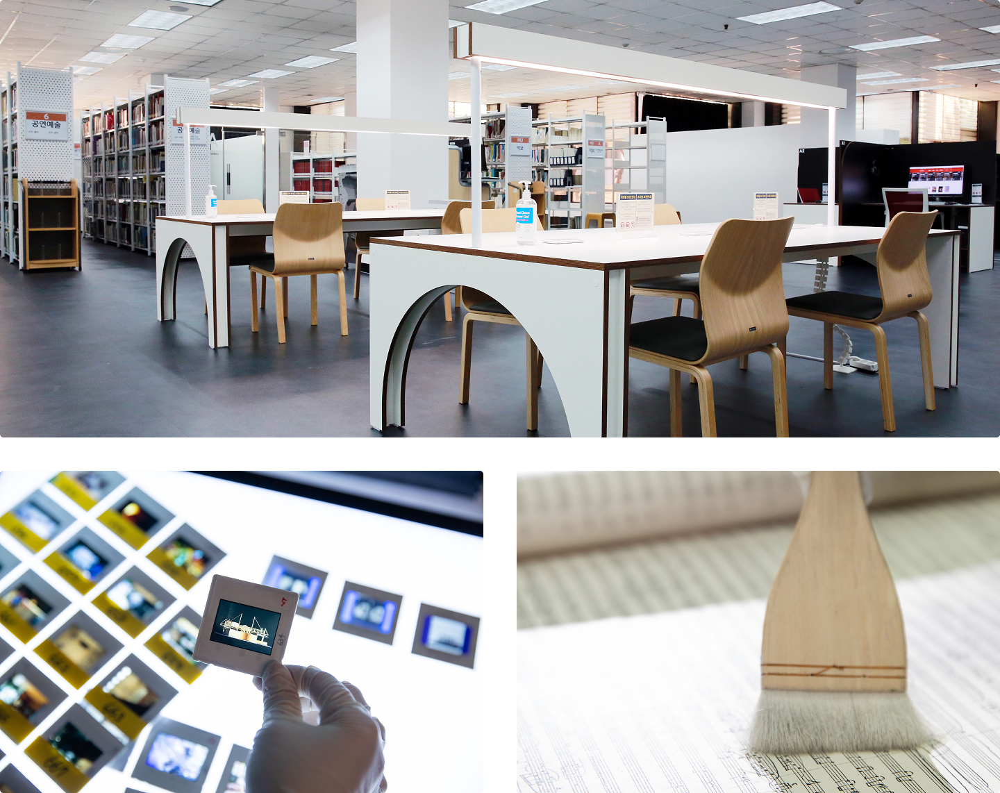
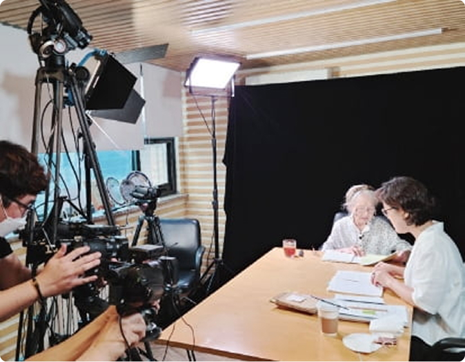
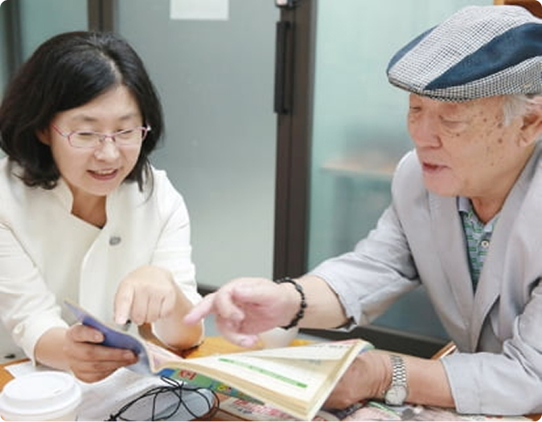
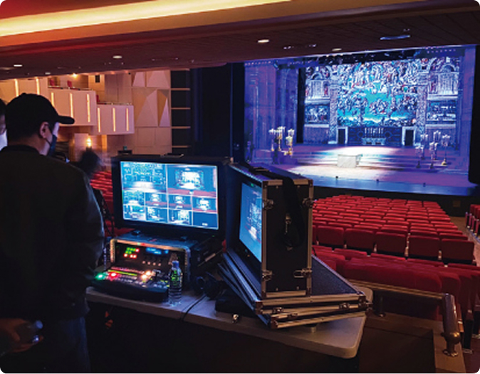
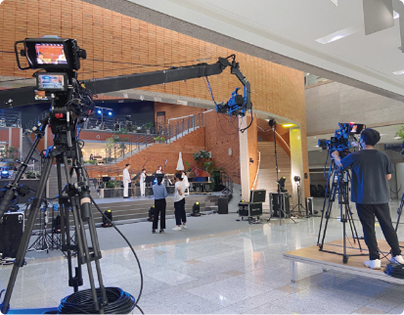
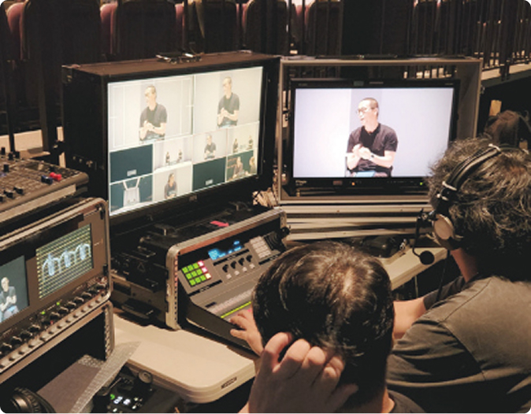
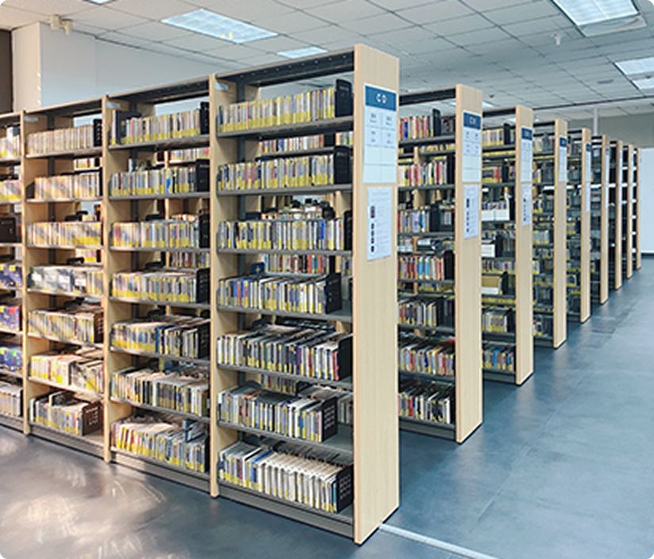
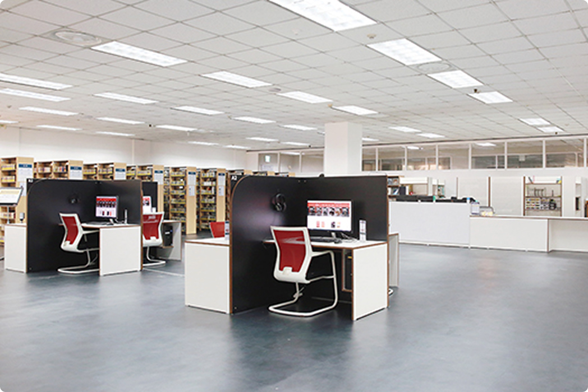
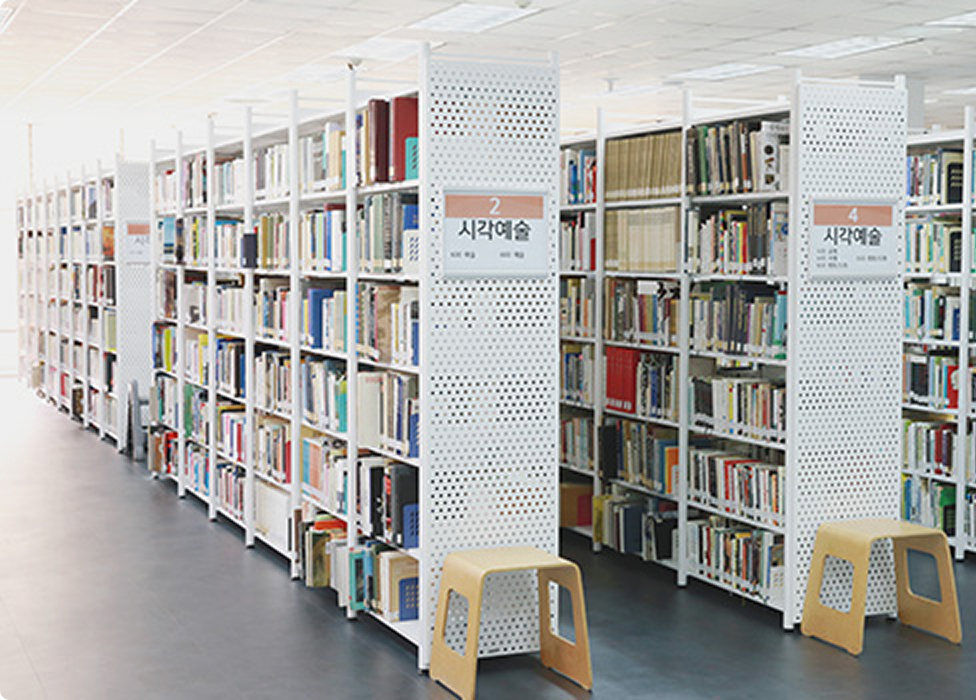

1979년에 개원한 아르코예술기록원은 한국 근현대 예술사의 연구적 가치가 높은 기록물을 체계적으로 수집·보존하고 이용 서비스를 제공합니다. 〈한국 근현대예술사 구술채록사업〉과 〈공연영상화사업〉으로 예술 현장의 생생한 순간을 기록하며, 전시·교육·연구 등 다양한 프로그램을 통해 예술기록의 가치를 확산해 나가고 있습니다.

[2025. 11 기준]
| 기록물 | 생산기록 | 한국 근현대예술사 구술채록사업 구술기록 390명 | 온·오프라인 전체 공개 |
|---|---|---|---|
| 공연영상화사업 공연실황영상 2,302편 | 하이라이트 영상 전체 공개 전체 영상 방문 열람 |
||
| 수집기록 | 문학, 시각예술, 연극·뮤지컬, 무용, 음악, 예술종합, 예술일반, 예술정책, 기타 컬렉션 140개 | 사전예약 후 방문 열람 (서초동 본원) |
|
| 일반자료 | 예술분야 도서, 음반 등 단행본 약 7만 5천건 | 방문 열람 (서초동 본원) |
|
| 웹 DB | 온·오프라인 전체 공개 | ||
2003년부터 시작된 <구술채록사업>은 일제강점기, 한국전쟁 등 굴곡의 역사 속에서 중요한 문헌 기록 대부분이 훼손, 폐기, 망실되어왔고, 빈약한 문헌 기록에 의존하여 반복 인용되는 현실을 타개하고자 시작되었습니다.
원로 예술인들의 삶과 예술관을 생생하게 담아낸 구술 기록은 당대 예술계의 풍경, 예술 사조, 인적 교류, 작품세계 등을 탐구하는 데 있어 필요한 기초연구 자료로 활용되고 있습니다.
삶이 곧 근현대 예술사가 되는 박완서(문학), 차범석(연극), 김천흥(무용), 강석희(음악), 박서보(시각) 등 원로 예술인들의 생애를 영상과 채록문으로 만나보실 수 있습니다.


1980년부터 연극 · 뮤지컬 · 무용 · 음악 · 전통예술 · 다원예술 등 한국 공연예술사의 흐름과 특징을 담은 주요 공연을 영상으로 기록, 보존하며 동시에 학술 연구 · 창작지원 · 상영 등에 활용하고 있습니다.
최근 <공연영상화사업>은 공연 실황 촬영에서 나아가 주요 창작진 인터뷰 영상, 비하인드 제작과정 영상, 자막해설 · 음성해설 · 수어통역을 제공하는 접근성 영상을 제작하며 공연의 다양한 층위를 기록하고 있습니다. 또한 맥락적 접근이 가능하도록 포스터 · 대본 · 프로그램북 · 리플렛 등 디지털 공연자료를 수집하여 공연 영상과 함께 열람 서비스를 제공합니다.



전시, 교육, 학술행사, 연구 프로그램 등 예술 기록의 활용 및 가치 확산을 위해 다양한 프로그램을 제공합니다.
《원 테이블》은 학술 연구와 창작 활용을 위해 아르코예술기록원이 소장한 원본기록을 열람실에서 전시 형태로 공개하는 기획 프로그램입니다. 연극, 무용, 시각, 음악, 공연종합 등 다양한 기록물을 주제별 콘텐츠로 선보이며, 전시와 함께 북클릿 「원 테이블/원 시트(One Table/One Sheet)」 를 무료로 배포하여 전시 외연 정보를 추가로 제공합니다. 원 시트는 전시 기간 중 주제와 관련이 높은 공간, 기관, 단체에 연계 배포하여 어디서든 만나볼 수 있습니다.
원 테이블에서 ‘원’은 한(one)자리에 모인 자료들의 관계성을 강조하는 동시에 수집·정리·서비스·활용·재생산에 이르는 아카이브의 끊임없는 순환(circle)을 의미하는 중의적 표현입니다.
문화 예술 분야 (예비) 종사자를 대상으로 기록 관리 기초 이론과 실무 과정의 이해를 돕고, 네트워크 기회를 제공하기 위한 교육 프로그램입니다.
창작자의 작업 과정에서 생산된 기록물을 선별, 분류, 활용하는 방식에 대해 함께 고민하고, 실질적인 아카이빙 방법을 배워보는 교육 프로그램입니다.
아르코예술기록원은 한국근현대예술사 구술채록사업과 공연영상화사업을 추진하여 우리 예술사를 기록해왔습니다.
구술채록연구 결과물로는 2003년도부터 채록한 인터뷰 영상, 채록문, 구술자 기증 자료 등을, 공연영상화 결과물로는 1980년부터 촬영한 영상과 관련 공연 자료를 소장하고 있습니다.
[2025. 11 기준]
| 구분 | 문학 | 시각예술 | 공연예술 | 대중 예술 |
영화 | 문화 제도 |
공통 | 합계 | |||||
|---|---|---|---|---|---|---|---|---|---|---|---|---|---|
| 조형 | 건축 | 사진 | 기타 | 연극 | 무용 | 음악 | |||||||
| 생애사 | 39 | 57 | 5 | 2 | 5 | 44 | 31 | 40 | 19 | 4 | 1 | - | 247 |
| 주제사 | - | 3(32) | 3(20) | - | - | 3(12) | 4(51) | 3(15) | - | - | - | 1(13) | 17(143) |
| 소계 | 39 | 60(89) | 8(25) | 2 | 5 | 47(56) | 35(82) | 43(55) | 19 | 4 | 1 | 1(13) | 264(390) |
| 합계 | 19 | 4 | 1 | 1(13) | 264(390) | ||||||||
[2025. 11 기준]
| 구분 | 연극 | 뮤지컬 | 무용 | 음악 | 전통 | 다원 | 기타 | 계 |
|---|---|---|---|---|---|---|---|---|
| 편수 | 1268 | 75 | 695 | 92 | 95 | 58 | 19 | 2302 |
| 생산연도 | 1986~ | 1990~ | 1982~ | 1981~ | 1980~ | 2001~ | 1986~ |
아르코예술기록원은 우리 예술사의 중요한 예술가, 단체, 행사 등을 통해 생산되거나 이를 주제로 한 기록을 수집하여 보존하고 있습니다. 문화예술 창작과 작품세계 형성, 예술 활동 과정 등에서 생산된 기록을 정리하여 서비스합니다.
아르코예술기록원은 영구적 보존 가치가 있는 우리 예술사의 중요한 예술가, 단체, 전시 및 공연 기록을 수집, 보존하고 서비스 합니다. 문학, 시각예술, 연극·뮤지컬, 무용, 음악, 예술종합, 예술일반, 예술정책, 분야 컬렉션 140개(2025년 11월 기준)의 정보를 제공합니다.
도서, 연속간행물, 클래식 음반 등 일반 유통 자료로 소장처가 열람실, 서고인 자료입니다.
열람실에서는 문화예술 창작 및 연구 활동 지원을 위해 국립중앙도서관, 국회도서관 원문 DB와 국내 · 해외 학술정보 DB를 제공하여 최신 원문 자료를 서비스하고 있습니다.



수집·생산·일반자료 합계
디지털화 후 공개 자료
소장 컬렉션 기준
인물·단체 표준 식별 정보
중복 포함
중복 포함
자료 생산 연도 기준
통계 안내 · 핵심 카운트는 통합 데이터베이스에서 실시간 산출되며, 분야별 비율과 시기 분포는 분기별 큐레이션 검수를 거칩니다.
최종 갱신: 2026년 08월
한국문화예술위원회는 훌륭한 예술이 우리 모두의 삶을 변화시키는 힘을 믿습니다. 문화예술진흥을 위한 사업과 활동을 지원함으로써, 모든 이가 창조의 기쁨을 공유하고 가치 있는 삶을 누리도록 함께합니다.
한국문화예술위원회는 훌륭한 예술이 우리 모두의 삶을 변화시키는 힘을 믿습니다. 문화예술진흥을 위한 사업과 활동을 지원함으로써, 모든 이가 창조의 기쁨을 공유하고 가치 있는 삶을 누리도록 함께합니다.
한국문화예술위원회는 훌륭한 예술이 우리 모두의 삶을 변화시키는 힘을 믿습니다. 문화예술진흥을 위한 사업과 활동을 지원함으로써, 모든 이가 창조의 기쁨을 공유하고 가치 있는 삶을 누리도록 함께합니다.
한국문화예술위원회는 훌륭한 예술이 우리 모두의 삶을 변화시키는 힘을 믿습니다. 문화예술진흥을 위한 사업과 활동을 지원함으로써, 모든 이가 창조의 기쁨을 공유하고 가치 있는 삶을 누리도록 함께합니다.